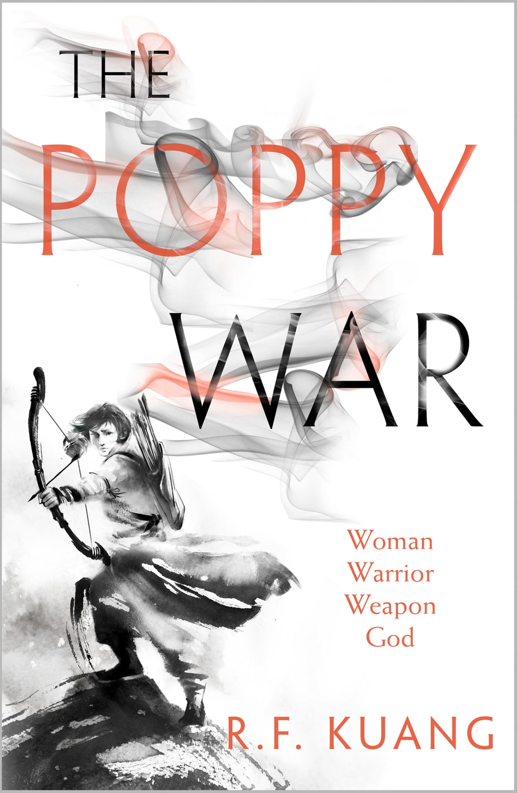

The Poppy Wars

˗ˏˋ ★ ★ ★ ★ ★ ˎˊ˗
I loved this book so much it is my favourite series and I would recommend this to everyone. It starts with the main character Rin and her journey to the elite boarding school called Sinegard.
I loved the start of this book, it was so hooking. I liked the way she escapes an arranged marriage by studying for days on end for a test called the Kenju. I feel like this showed her determination and her badass ways.
When she first arrives at Sinegard she is treated like an outsider because of her upbringing and where she was from. This was such an interesting storyline as it made her character develop and showed that she doesn't care about what anyone thinks.
I loved the way she is introduced into shamanism and military strategy. I loved the character of Jiang and the way that he taught her how to harness the gods power. I thought it was quite stupid and seemed like an excuse to get high but the more that they talked about it I found it extremely interesting.
I loved the way she harnesses the Phoenix and the way it fits with her personality. The Phoenix is about rage and destruction and you can see that potential in her.
The Third Poppy War beginning was such a good storyline and I thought the political situation with the Nikara Empire was so interesting.
I thought that the Sinegard students being conscripted to the army was an amazing decision. I loved how Rin learns more about her Spearly past under the mentorship of Altan Tengsin. I also really liked the way she connected with Nezha during this time.
I found Rin and Altan's relationship extremely interesting and complex. I found Altan's self destructive qualities and how his hatred for the Mugenese drives him.
As we dive deeper into the story it shows horrific war crimes of the Mugenese. They use chemical weapons and commit mass murder. The attack of Golyn Niis was shocking and Venkas recounts of the attack were absolutely jaw dropping.
My favourite part was the development of Altan and Rin's relationship as you can see the way shamanism really drives people crazy. I found it so heartbreaking and shocking when Altan dies as I did not expect a big character to be killed off. Though it was a great choice because it showed Rin's development and the way she fully embraces the Phoenix's rage.
The most shocking part is when she wipes out all of the Muganese by burning their entire island to the ground. This was mass genocide and not expected at all. I also found it so interesting to read it from Rin's point of view because of the way she thought she was right.
I loved how this book showed Rin's transformation from a lonely orphan to one of the most powerful people in the Nikara Empire.
Write a Review